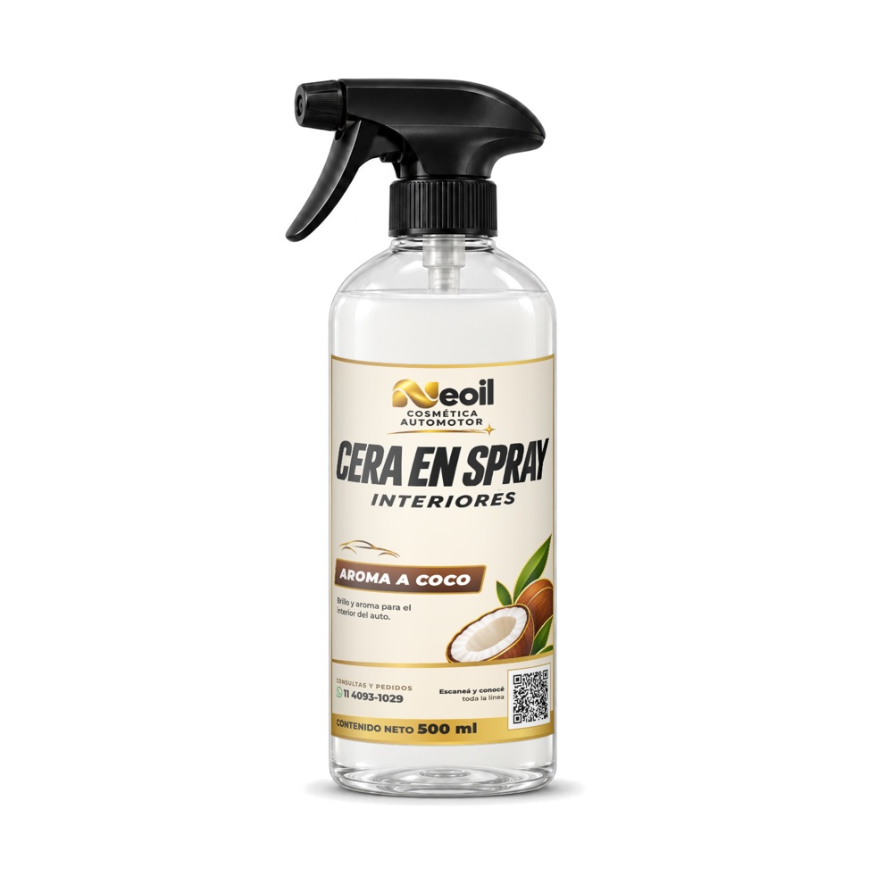

Habitáculo
Cera en spray interiores.
Brillo y aroma para el interior del auto. Realza el aspecto de los plásticos interiores y deja aroma a coco.
Contenido neto: 500 ml
Consultar por WhatsApp
Presentación.

Para qué sirve.
- Dar brillo a tablero y plásticos interiores.
- Renovar el aspecto del interior.
- Dejar aroma a coco.
Cómo se usa.
- Aplicá sobre la superficie limpia y seca.
- Rociá sobre un paño de microfibra.
- Distribuí de forma pareja y retirá el excedente con un paño seco.